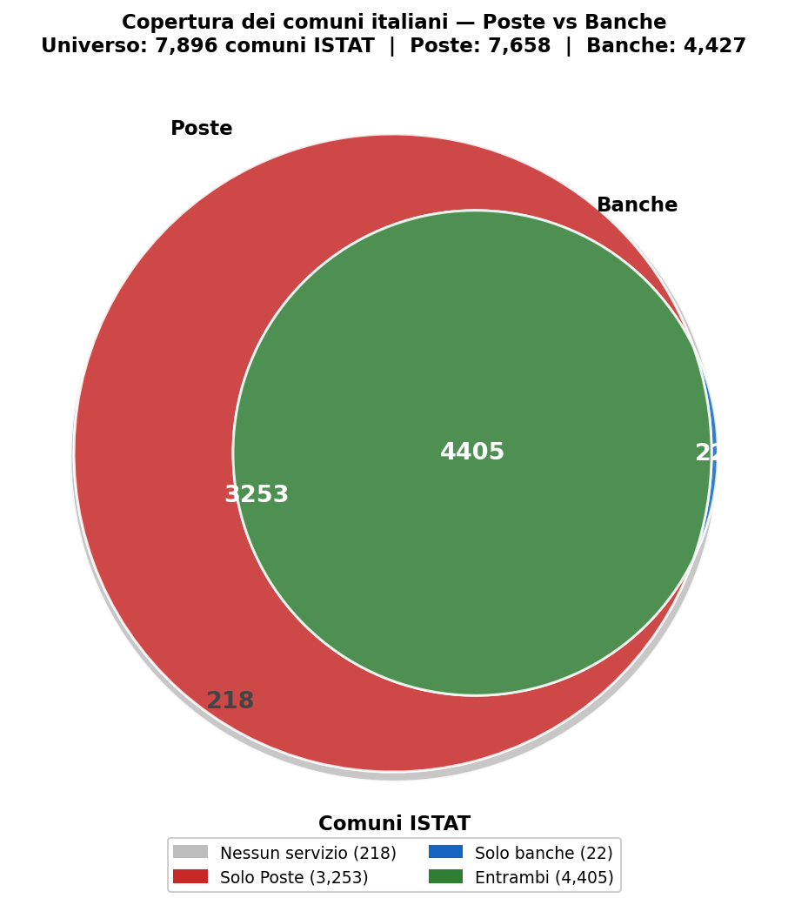
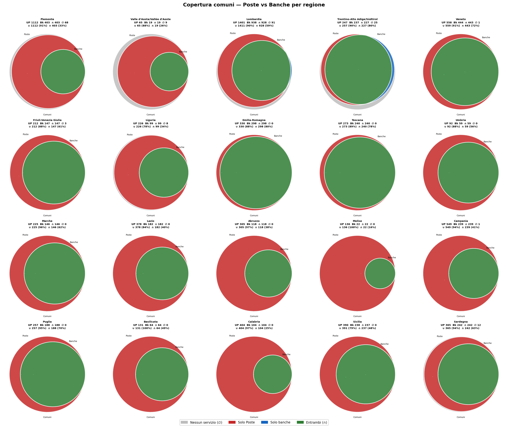

Poste e banche nei comuni italiani
Una mappa della copertura dei servizi di prossimità
Paolo Volterra ![]()
Su 7.896 comuni italiani, 7.658 (97,0%) hanno almeno un ufficio postale e 4.427 (56,1%) almeno uno sportello bancario. L’intersezione — comuni serviti da entrambe le reti — è di 4.405. Ne risultano 3.253 comuni raggiungibili da Poste ma non da alcuna banca (41,2% del totale), 22 con banca ma senza ufficio postale, e 218 privi di entrambi. Il testo commenta i diagrammi di Venn prodotti dall’analisi, mostrando come la rete postale svolga una funzione di presidio territoriale sistematica in aree dove il sistema bancario si è ritirato — con intensità molto diversa tra regioni del Nord, del Centro e del Mezzogiorno.
sportelli bancari, uffici postali, comuni, desertificazione finanziaria, aree interne, copertura territoriale
1 Due reti, un territorio
L’Italia è attraversata da due reti capillari di servizi finanziari di prossimità che non si sovrappongono affatto: la rete degli sportelli bancari, costruita sul criterio della redditività, e quella degli uffici postali, costruita — almeno nelle sue origini — su un criterio di servizio universale. Confrontarle comune per comune rivela qualcosa di non ovvio: le due reti non sono alternative, ma complementari in modo asimmetrico, e la loro diversa distribuzione riflette logiche istituzionali profondamente differenti.
I dati utilizzati provengono da tre fonti: l’anagrafe GIAVA di Banca d’Italia (19.291 sportelli bancari attivi, snapshot marzo 2026), le API ufficiali di Poste Italiane (12.615 uffici postali attivi, aggiornamento 2026), e l’anagrafe ISTAT dei comuni (7.896 comuni, GeoPackage 2024-2025). La granularità dell’analisi è il comune: si considera servito qualunque comune nel cui perimetro ricade almeno un punto fisico della rete considerata.
2 Il quadro nazionale: una copertura doppiamente asimmetrica
Il diagramma di Venn in Figura 1 riassume la struttura della copertura nazionale. Il cerchio rosso (Poste) è molto più grande del cerchio verde (Banche): la rete postale raggiunge 7.658 comuni su 7.896, il 97,0% dell’universo. La rete bancaria ne raggiunge 4.427, il 56,1%.

Figura 1: Copertura dei comuni italiani — Poste vs Banche
La prima asimmetria è dimensionale: Poste copre quasi il doppio dei comuni coperti dalle banche. La seconda, meno ovvia, è strutturale: l’intersezione dei due insiemi è quasi identica alla rete bancaria stessa. Dei 4.427 comuni con uno sportello bancario, 4.405 hanno anche un ufficio postale — solo 22 fanno eccezione. Detto altrimenti: le banche non arrivano praticamente mai dove Poste non è già presente. La rete postale precede, accompagna e sopravvive alla rete bancaria.
Questa osservazione rovescia una narrazione comune. Non è che le due reti presidiano aree diverse in modo complementare: è che la rete bancaria è quasi interamente contenuta nella rete postale. Ovunque c’è una banca, c’è anche un ufficio postale; ma in 3.253 comuni — il 41,2% del totale italiano — l’ufficio postale è l’unico presidio finanziario fisico esistente.
I 218 comuni privi di entrambi i servizi (2,8% del totale) costituiscono il nucleo della desertificazione finanziaria assoluta, analizzato in dettaglio nella nota metodologica allegata [@volterra2026desertificazione]. I 22 comuni con banca ma senza ufficio postale sono una categoria statisticamente trascurabile ma concettualmente curiosa, concentrata quasi interamente in Lombardia e Trentino-Alto Adige, e probabilmente riconducibile a casi specifici (chiusura di sportelli postali in comuni già serviti da una dipendenza bancaria, o comuni di recente istituzione non ancora inclusi nelle rotte di distribuzione postale).
3 La lettura regionale: uniformità di superficie, divari strutturali
Il subplot per regione (Figura 2) mostra che il quadro nazionale nasconde divari molto profondi. La copertura di Poste è elevata in quasi tutte le regioni — dieci di esse raggiungono il 100% dei propri comuni, e le restanti si attestano tra l’87% e il 99,8% — ma la copertura bancaria varia dal 16,2% del Molise al 90,3% dell’Emilia-Romagna, un rapporto di 1 a 5,6.

Figura 2: Copertura comuni — Poste vs Banche per regione
| Regione | Tot. comuni | Coperti Poste | Coperti Banche | Solo Poste | Nessuno | Cov. Banche % |
|---|---|---|---|---|---|---|
| Emilia-Romagna | 330 | 330 | 298 | 32 | 0 | 90,3 |
| Toscana | 273 | 273 | 240 | 33 | 0 | 87,9 |
| Trentino-A.A./Südtirol | 282 | 247 | 237 | 20 | 25 | 84,0 |
| Veneto | 560 | 558 | 444 | 115 | 1 | 79,3 |
| Puglia | 257 | 257 | 188 | 69 | 0 | 73,2 |
| Friuli-Venezia Giulia | 215 | 212 | 147 | 65 | 3 | 68,4 |
| Sardegna | 377 | 365 | 242 | 123 | 12 | 64,2 |
| Marche | 225 | 225 | 146 | 79 | 0 | 64,9 |
| Umbria | 92 | 92 | 59 | 33 | 0 | 64,1 |
| Lombardia | 1.502 | 1.401 | 938 | 473 | 91 | 62,5 |
| Sicilia | 391 | 390 | 238 | 153 | 0 | 60,9 |
| Lazio | 378 | 378 | 182 | 196 | 0 | 48,1 |
| Basilicata | 131 | 131 | 64 | 67 | 0 | 48,9 |
| Campania | 550 | 549 | 239 | 310 | 1 | 43,5 |
| Liguria | 234 | 226 | 99 | 127 | 8 | 42,3 |
| Abruzzo | 305 | 305 | 118 | 187 | 0 | 38,7 |
| Piemonte | 1.180 | 1.112 | 403 | 709 | 68 | 34,2 |
| Valle d’Aosta | 74 | 65 | 19 | 46 | 9 | 25,7 |
| Calabria | 404 | 404 | 104 | 300 | 0 | 25,7 |
| Molise | 136 | 136 | 22 | 114 | 0 | 16,2 |
Tabella 1: Copertura comunale per regione — Poste e banche (2026).
3.1 Il Mezzogiorno: deserto bancario con presidio postale intatto
Il pattern più leggibile nella Figura 2 è quello delle regioni meridionali e insulari. I subplot di Calabria, Molise, Abruzzo, Basilicata e Campania mostrano tutti lo stesso profilo: un grande cerchio rosso (Poste) che copre quasi interamente il perimetro dei comuni ISTAT, e un cerchio verde (Banche) di dimensioni molto ridotte, quasi sempre contenuto nel rosso. Non c’è zona grigia: quasi nessun comune meridionale è privo di entrambi i servizi, ma la stragrande maggioranza è raggiunta solo da Poste.
La Calabria è il caso più estremo in valore assoluto: su 404 comuni, 300 sono raggiungibili solo dall’ufficio postale, con una copertura bancaria ferma al 25,7%. Il Molise è il caso più estremo in termini relativi: su 136 comuni, solo 22 hanno uno sportello bancario (16,2%), mentre tutti i 136 hanno un ufficio postale. In queste regioni, l’ufficio postale non è un presidio complementare alla banca: è l’unico sportello fisico disponibile per la quasi totalità della popolazione rurale.
Va notato che questa situazione non è il frutto di una scelta attiva di Poste Italiane: è il risultato residuale del ritiro progressivo delle banche, avvenuto principalmente nell’ultimo quindicennio come risposta alla pressione sui costi e al consolidamento del sistema bancario. Le fusioni e acquisizioni che hanno ridotto il numero di istituti da oltre 800 a poco più di 400 hanno concentrato le chiusure nelle aree a minore densità e minore redditività attesa, che coincidono con i piccoli comuni delle regioni a economia più fragile.
3.2 Il Nord: il paradosso lombardo e la polverizzazione piemontese
Le regioni settentrionali presentano un quadro opposto in termini di copertura bancaria assoluta ma non privo di tensioni. Lombardia ed Emilia-Romagna guidano la classifica di penetrazione bancaria (62,5% e 90,3% rispettivamente), ma i loro subplot rivelano profili molto diversi.
L’Emilia-Romagna mostra la struttura più equilibrata del paese: copertura postale al 100%, bancaria al 90,3%, 32 comuni con solo Poste, zero comuni senza nulla. È l’unica grande regione in cui le due reti si avvicinano a una distribuzione parallela, riflettendo la struttura policentrica dell’economia emiliana — una trama fitta di capoluoghi e cittadine medie in cui la presenza bancaria è storicamente radicata.
La Lombardia presenta invece un apparente paradosso: è la regione con il maggior numero assoluto di comuni privi di entrambi i servizi (91), pur avendo la seconda copertura bancaria del paese. La spiegazione è strutturale: la Lombardia ha 1.502 comuni, il numero più alto d’Italia, molti dei quali sono piccolissimi comuni montani (Valchiavenna, Valtellina, Valcamonica, alto Lago di Como) che nessuna rete raggiunge. La ricchezza media della regione coesiste con zone alpine profonde in condizione di desertificazione assoluta, invisibili nelle medie regionali.
Il Piemonte offre un caso ancora diverso. Con 1.180 comuni, una copertura postale al 94,2% e bancaria ferma al 34,2%, è la regione con il maggior numero di comuni solo Poste in valore assoluto (709) e con 68 comuni privi di entrambi i servizi. Tra le regioni del Nord, è quella che assomiglia di più al Mezzogiorno nella struttura della copertura, segno di una frammentazione comunale storica — le Langhe, le Valli Occitane, il Monferrato profondo — mai pienamente integrata nel tessuto bancario.
3.3 Trentino-Alto Adige: l’eccezione strutturale
Una nota merita il Trentino-Alto Adige/Südtirol, il cui subplot nella Figura 2 è il solo a mostrare una striscia blu (comuni con solo banche) visibile a occhio nudo. Con 237 comuni coperti dalle banche su 282 totali (84,0%), è la regione con la più alta penetrazione bancaria relativa del paese. Allo stesso tempo ha 25 comuni privi di entrambi i servizi, concentrati nelle valli alpine minori.
La coesistenza di un’alta copertura bancaria con significativi vuoti assoluti e con la presenza di comuni solo banca riflette la struttura istituzionale specifica della regione: un sistema di casse rurali (Raiffeisen) storicamente capillare nelle vallate alpine, che ha mantenuto presidi in aree dove la copertura postale è più difficile da garantire per ragioni logistiche. In queste aree, la cassa rurale è arrivata prima dell’ufficio postale e vi è rimasta anche quando quest’ultimo non è stato mai istituito.
4 Focus Mezzogiorno: Poste come unico presidio
4.1 La struttura della dipendenza
Il Mezzogiorno — Abruzzo, Molise, Campania, Puglia, Basilicata, Calabria, Sicilia, Sardegna — conta 2.551 comuni. Di questi, 1.323 (il 51,9%) sono raggiungibili solo dall’ufficio postale, senza alcuno sportello bancario. È la prima discontinuità rispetto al resto del paese: al Nord quella quota è il 36%, al Centro il 35%. Nel Mezzogiorno più di un comune su due è già, oggi, un comune a presidio postale esclusivo.
La copertura bancaria media delle otto regioni meridionali si ferma al 47,6%, contro il 58,6% del Nord e il 64,8% del Centro. Ma la media meridionale aggrega realtà molto diverse. Puglia e Sardegna si collocano oltre il 60%, con una struttura urbana sufficientemente densa e un sistema bancario locale (Banca Popolare di Puglia e Basilicata, Banco di Sardegna) ancora capillare. All’estremo opposto, Molise e Calabria non raggiungono rispettivamente il 17% e il 26%.
| Regione | Cov. banche % | Solo Poste % |
|---|---|---|
| Puglia | 73,2 | 26,8 |
| Sardegna | 64,2 | 32,6 |
| Sicilia | 60,6 | 39,1 |
| Basilicata | 48,9 | 51,1 |
| Campania | 43,5 | 56,4 |
| Abruzzo | 38,7 | 61,3 |
| Calabria | 25,7 | 74,3 |
| Molise | 16,2 | 83,8 |
Tabella 2: Copertura bancaria e comuni solo-Poste nelle regioni del Mezzogiorno (2026).
4.2 Il caso Molise-Calabria e le province più desertificate
Molise e Calabria rappresentano i due poli della desertificazione bancaria meridionale. In Molise, 114 comuni su 136 dispongono esclusivamente dell’ufficio postale: l’83,8% del totale regionale. A livello provinciale, Isernia è la provincia italiana con la più alta quota di comuni solo-Poste (90,4%: 47 comuni su 52), seguita da Vibo Valentia (82,0%), Campobasso (79,8%) e Cosenza (75,3%). Nelle prime quattro province della graduatoria, tutte meridionali, meno di un quarto dei comuni ha uno sportello bancario.
In Calabria, il numero assoluto è il più alto del Mezzogiorno: 300 comuni su 404 sono a presidio postale esclusivo. Considerando che si tratta di una regione con 404 comuni, di cui molti di piccola taglia nei rilievi aspromontani e presilani, il dato segnala non un fenomeno recente ma una struttura territoriale mai pienamente presidiata dal sistema bancario nemmeno nel periodo di massima espansione degli sportelli.
L’Abruzzo presenta un profilo simile nel rapporto interno: la provincia dell’Aquila registra il 74,1% di comuni solo-Poste, Chieti il 65,4%. Le aree interne della dorsale appenninica — dal Sangro alla Valle Peligna — condividono con la montagna calabrese la stessa assenza di presidio bancario fisico.
4.3 Chi è rimasto: la geografia delle banche meridionali
Dei 4.427 comuni italiani con almeno uno sportello bancario, 1.214 si trovano nel Mezzogiorno. In quelle 1.214 localizzazioni opera un numero ristretto di istituti. Intesa Sanpaolo è il primo operatore con 548 sportelli distribuiti in 405 comuni; seguono UniCredit (525 sportelli, 345 comuni), Monte dei Paschi di Siena (322 sportelli, 274 comuni) e BPER Banca (314 sportelli, 264 comuni). Sono in prevalenza grandi gruppi nazionali: il presidio territoriale meridionale è ormai concentrato nelle loro filiali, dopo che i maggiori istituti locali sono stati progressivamente incorporati nei gruppi bancari settentrionali negli anni Duemila e Duemiladieci.
Fanno eccezione il Banco di Sardegna (264 sportelli in 241 comuni sardi) e BdM Banca (198 sportelli in 169 comuni tra Puglia, Basilicata e Campania), che mantengono una presenza capillare nelle rispettive aree di storico radicamento. La Banca Agricola Popolare di Sicilia e la Banca Popolare di Puglia e Basilicata presidiano nicchie locali in modo significativo ma non sufficiente a modificare il quadro di insieme.
4.4 Il declino: cinque anni di dati TDB10195
La fotografia attuale è il risultato di una contrazione accelerata nell’ultimo quinquennio. La serie TDB10195 di Banca d’Italia consente di misurare la perdita di sportelli bancari per regione tra il 2020 e il 2025.
| Regione | 2020 | 2022 | 2024 | 2025 | Var. 5 anni | Var. % |
|---|---|---|---|---|---|---|
| Campania | 1.209 | 1.083 | 1.003 | 974 | −235 | −19,4 |
| Sicilia | 1.174 | 1.098 | 1.024 | 997 | −177 | −15,1 |
| Puglia | 1.054 | 957 | 915 | 895 | −159 | −15,1 |
| Abruzzo | 496 | 429 | 399 | 392 | −104 | −21,0 |
| Sardegna | 525 | 487 | 449 | 442 | −83 | −15,8 |
| Calabria | 362 | 318 | 305 | 294 | −68 | −18,8 |
| Basilicata | 193 | 172 | 161 | 157 | −36 | −18,7 |
| Molise | 97 | 81 | 75 | 73 | −24 | −24,7 |
Tabella 3: Sportelli bancari nel Mezzogiorno 2020-2025 (fonte: Banca d’Italia TDB10195).
Il Mezzogiorno ha perso complessivamente circa 886 sportelli nel quinquennio, una riduzione media del 18,4%. Il ritmo di contrazione è in linea o superiore alla media nazionale — che nello stesso periodo si attesta al 18,5% — e risulta più accentuato proprio nelle regioni già più fragili. Molise ha perso il 24,7% degli sportelli in cinque anni partendo già da una base bassissima (97 nel 2020); Abruzzo il 21%; Campania il 19,4%.
Il dato rilevante non è solo il livello ma la traiettoria: la perdita non rallenta. Tra il 2024 e il 2025 le regioni meridionali registrano ciascuna un’ulteriore contrazione, segno che il processo di razionalizzazione non è esaurito. In questo contesto, i 1.323 comuni meridionali già oggi a presidio postale esclusivo non sono un punto di arrivo: sono, verosimilmente, un insieme destinato ad allargarsi nei prossimi anni con le nuove chiusure.
4.5 Le imprese senza sportello: accesso al credito e intermediazione a distanza
Il problema non riguarda solo i residenti che devono raggiungere un bancomat o pagare una bolletta. Riguarda le imprese — agricole, artigiane, commerciali — insediate in quei 1.323 comuni meridionali dove l’unico presidio finanziario fisico è l’ufficio postale.
BancoPosta offre ai privati un conto corrente funzionale e servizi di pagamento; alle imprese, il perimetro è molto più stretto. Non eroga credito commerciale, non apre fidi di cassa, non struttura mutui chirografari o leasing. Per qualunque operazione che non sia un pagamento o una riscossione, l’impresa del comune senza banca deve raggiungere fisicamente una filiale nel comune capoluogo più vicino — spesso a 20-40 km, su strade secondarie, con orari incompatibili con l’attività produttiva.
Questo non è un discomodo marginale: è una barriera strutturale all’accesso al credito. La filiale locale era il punto dove si costruiva la relazione banca-impresa, dove il direttore conosceva il tessuto produttivo, i cicli stagionali, la storia dell’azienda. Con la chiusura, quella conoscenza si disperde. Il rapporto si trasferisce a un gestore remoto che valuta pratiche su dati di bilancio standardizzati, senza contesto territoriale. Il risultato prevedibile — e documentato in letteratura — è un aumento dell’asimmetria informativa, che si traduce in tassi più alti, garanzie maggiori richieste, o rifiuti per le pratiche più piccole.
I numeri aggregati confermano la struttura del problema. Il credito bancario erogato tramite sportelli localizzati nel Mezzogiorno ammonta a 353 miliardi di euro (TFR10194, dicembre 2024), contro 1.841 miliardi al Nord e 575 al Centro — un rapporto di poco più di 1 a 5 tra Mezzogiorno e Nord, a fronte di una popolazione in rapporto di circa 1 a 1,4. Calabria e Molise, le regioni con la più bassa copertura bancaria, sono anche quelle con i volumi di credito più compressi: rispettivamente 20 e 5 miliardi di euro, gli ultimi in graduatoria.
Un ulteriore canale di penalizzazione riguarda gli strumenti pubblici di garanzia del credito. Il Fondo di Garanzia per le PMI — lo strumento più usato per agevolare l’accesso al credito delle piccole imprese — funziona attraverso le banche convenzionate: è la banca che istruisce la pratica, che presenta la domanda, che eroga il finanziamento garantito. In assenza di una filiale locale, la probabilità che un’impresa di piccola taglia, con fatturato sotto i 2 milioni, acceda al FdG si riduce drasticamente: il costo fisso della relazione bancaria non è più ammortizzabile sulla vicinanza.
Ne risulta un meccanismo di esclusione che non agisce per decreto ma per erosione progressiva: ogni filiale chiusa aumenta la distanza media tra impresa e banca; ogni aumento di distanza riduce la probabilità di una richiesta di credito; ogni richiesta mancata è investimento che non si fa, personale che non si assume, macchinario che non si rinnova. La desertificazione finanziaria produce desertificazione economica non come metafora ma come catena causale verificabile — anche se la verifica richiede dati di panel che vanno oltre le fonti qui utilizzate.
4.6 Una complementarità sotto pressione
Il Mezzogiorno presenta dunque la forma più acuta di quello che il dato nazionale descrive in modo attenuato: una dipendenza strutturale dalla rete postale come unico presidio finanziario fisico per la maggioranza dei comuni. Questa dipendenza non è emersa come scelta progettuale, ma come residuo di un ritiro bancario che Poste Italiane — vincolata da obblighi di servizio universale e da una presenza capillare storicamente costituita — non ha finora replicato con la stessa velocità.
La domanda che i dati pongono è se questa asimmetria reggerà. La razionalizzazione della rete postale, in corso sotto forma di riduzione degli orari di apertura, fusione di uffici, trasferimento di operazioni al canale digitale, non si traduce ancora in chiusure di massa paragonabili a quelle bancarie. Ma qualunque erosione della copertura postale nei comuni del Mezzogiorno dove la banca non c’è più — e dove spesso non c’è mai stata — produrrebbe effetti senza alternativa: non una riduzione della scelta, ma l’azzeramento del servizio fisico.
5 Cosa ci dice il venn
Il diagramma di Venn non misura la qualità dei servizi, né la distanza da percorrere per raggiungerli, né la gamma di operazioni disponibili in ciascun punto. Misura la presenza fisica, binaria, di almeno un presidio. È una soglia minima.
Eppure quella soglia già discrimina in modo netto. Il dato più significativo non è né il 97% di copertura postale né il 2,8% di desertificazione assoluta: è il 41,2% di comuni in cui l’ufficio postale è l’unico servizio finanziario di prossimità esistente. In questi 3.253 comuni — che ospitano una frazione minoritaria ma non trascurabile della popolazione italiana — il prelievo di contante, l’invio di un bonifico, la gestione di un conto corrente, il pagamento di un’utenza passano necessariamente per lo sportello postale.
Questa funzione di presidio residuale non è stata progettata: è emersa come conseguenza di un ritiro bancario che Poste Italiane non ha avuto la stessa pressione commerciale a replicare, almeno non con la stessa velocità. La separazione istituzionale tra le due reti — l’una privata e quotata, l’altra a controllo pubblico e con obblighi di servizio universale — ha prodotto una complementarità non pianificata ma funzionalmente rilevante.
Quanto sia stabile questa complementarità, e se la spinta alla razionalizzazione della rete postale in corso stia erodendo anche quest’ultima linea di presidio, è una domanda che i dati qui presentati non rispondono, ma che i trend annuali della serie TDB10195 (−515 sportelli bancari tra dicembre 2024 e dicembre 2025; −80 comuni bancari coperti nello stesso periodo) iniziano a porre con una certa urgenza.
Vedi anche
- Servono ancora gli sportelli fisici?Il 43% dei comuni italiani non ha uno sportello bancario e 216 non hanno né banca né ufficio postale. Versione corretta del 31 ottobre 2026.
- Le banche e il FTA IstatLe banche locali e regionali costruiscono le loro strategie creditizie e commerciali su una conoscenza del territorio che spesso si ferma ai dati di Centrale Rischi, bilanci depositati e segnalazioni di vigilanza.
- Le aree interne italianeQuasi sei Sistemi Locali del Lavoro su dieci in Italia sono classificati “area interna” secondo la Strategia Nazionale Aree Interne: comuni distanti dai poli di erogazione dei servizi essenziali di istruzione, salute e m